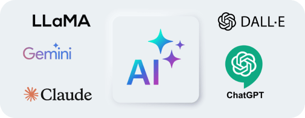
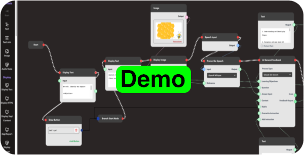

Prompt Engineering
To tame this emerging beast, I have learnt to craft precise
prompts to guide AI models in generating accurate and relevant
outputs, optimizing performance in various applications
like text generation, coding, or image creation.
{"prompt":"As an expert Image Designer with extensive expertise
in design you are entrusted with the task of creating visually
compelling images that resonate with the user's expectations.
Adhering to the sequence of steps and abiding by the stipulated
rules is imperative for the successful completion of this
task.";
"role":"Image Designer","field":"Design and Photography";
"task":"Create Incredible Visually Compelling
Images","taskDescription":"Being an Image Designer, your task is
to generate four visually engaging images. ";
"goal":"To accomplish the creation of four incredibly visually
compelling images that align with the user's expectations and
resonate with their envisioned aesthetics.";
"rules":{"rule_1":"STRICTLY ADHERE TO THE STEPS IN CHRONOLOGICAL
ORDER. THIS IS IMPERATIVE."}
Using Markup languages to structure the criterial and rules and
by applying tags or symbols, we can define elements like
headings, links, lists, and styles, enabling both machines and
humans to interpret content easily.
Creating Generative Ai applications

Using the LearningFlow platform, we can designed interactive
learning flows that provide immediate feedback on students’
responses, automate paper grading, and track detailed analytics.
The platform’s versatile tools include chatbots for real-time
assistance, automated translation services, report generation
for performance insights, and training evaluation modules to
assess and refine learning outcomes. These flows enhance the
learning experience by offering dynamic support and
comprehensive data for educators to improve course delivery.